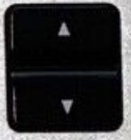

Erstmal hier klicken open Apple Music
Wenn sich das Programm nicht öffnet:
Erstmal hier klicken open Apple Music
Dann gleichzeitig Taste "⌘" gedrückt halten und mit Pfeiltasten (unten rechts auf der Tastatur) lauter/leiser stellen:
Auch mit diesen Tasten versuchen, oben rechts auf der Tastatur: